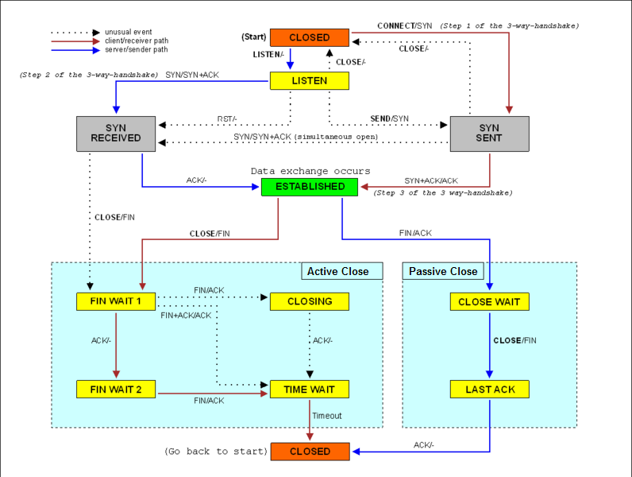

Brendan RoyalsA software engineer based in New York
I am currently in my fourth year at Cornell University in the College of Engineering. After graduation, I will be working as a software engineer, at Millennium Management.
More Information →Projects
Below is a selection of recent projects that I've worked on.
RML OCaml Interpreter
Implemented interpreter for non-trivial programming language (RML) implemented in OCaml

TCP-Lite
Developed scalable server and client solution to securely process users’ requests using sockets, threading, and SSL
Recent Writing
Net Neutrality
Published onThe Net Neutrality Overview serves as an introduction to the Net Neutrality argument, and provides potential solutions to existing systems, such as D3NS (Distributed Decentralized Domain Name Service).
Bitcoin Autobiography
Published onThe Bitcoin autobiography serves as an introduction to Bitcoin, providing information on its founding principles, current limitations (scalability), and future possibilities.